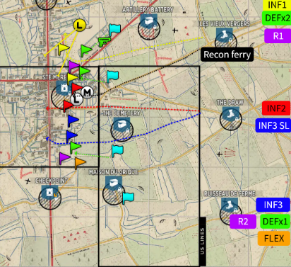
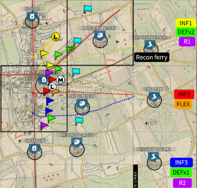
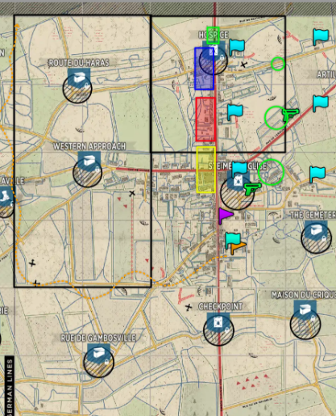

03 · Apartado
Leer la jugada en el mapa, el arranque, y qué hacer después del punto medio.
Leer el stratsketch
Banderas, garrisons, posiciones de tanque y rutas. Todo codificado por el color de tu grupo.
EN PREPARACIÓN
El contenido y las imágenes de esta sección se cargan más adelante.
Aperturas
El primer minuto marca el tono de toda la partida.
La apertura es una de las partes más importantes del partido: marca el tono y puede condicionar todo lo que sigue, según el mapa y cómo estén repartidos los puntos. A veces hay más de una apertura posible para el mismo punto intermedio, dependiendo de cuál termine siendo el segundo punto —eso mueve tu spawn inicial y qué camión tomás—. Prestale atención a la distribución de puntos: en el ejemplo de SME, la apertura depende de si se agarra la batería de artillería o el cementerio/crique, y por eso INF3 se divide y las banderas de FLEX e INF1 se mueven.


Desarrollo de la partida
Lo que viene depende de si ganás o perdés el punto medio.
En estos esquemas los grupos de INF ya no tienen banderas de OP puntuales: tienen bloques de color. Cada bloque es el área de responsabilidad de ese grupo —defenderla o empujarla, según toque—, porque a esta altura es imposible predecir dónde va a estar cada uno. Los recuadros y círculos verdes son las zonas de la defensa; en 3-2 las garrisons son responsabilidad de todos, pero en la práctica las termina armando la defensa. También vas a ver banderas de recon y OPs flex sueltas por el mapa.
